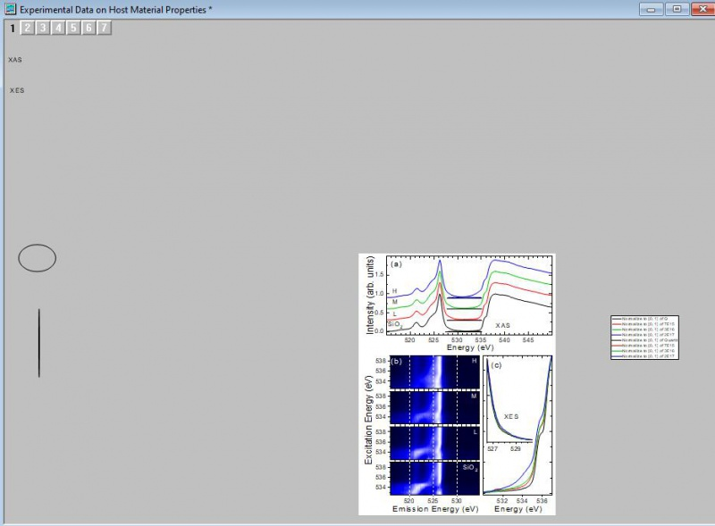
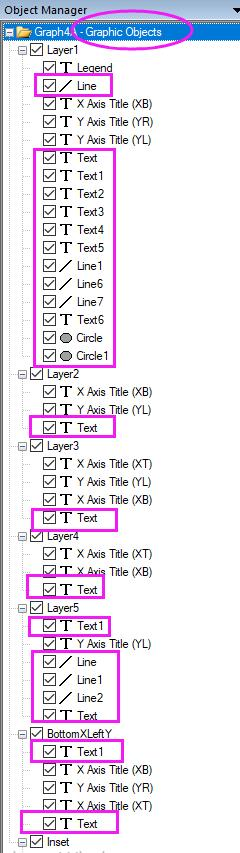

FAQ-1136 Warum fehlt meine Legende, ist meine Grafik langsam, weist meine Grafik beim Exportieren oder Zusammenfügen große weiße Flächen auf?
zoom-all-show-graph-contents
Letztes Update: 13.12.2022
Die Diagrammseite wird durch die weiße Fläche innerhalb des Diagrammfensters definiert. All das, was sich außerhalb der Seite befindet, wird standardmäßig weder gedruckt noch exportiert.
Diagrammobjekte wie Legenden, Textbeschriftungen und andere Diagrammobjekte werden versehentlich verschoben oder im grauen Bereich des Diagrammfensters positioniert. Diagrammobjekte werden auch manchmal aus Versehen durch Skript an falschen Stellen erzeugt.
Dies kann alle möglichen Probleme verursachen:
- Die Legende fehlt oder ist verschwunden. Das Menü Grafik: Legende: Legende rekonstruieren oder die entsprechende Schaltfläche bringt die Legende nicht zurück, da die Option Legende rekonstruieren die Legende nur rekonstruiert– sie stellt die Legendenposition nicht wieder her.
- Seltsame Ergebnisse beim Exportieren oder Kopieren von Grafiken wie z. B. geschrumpfte Grafiken, zusätzliche weiße Fläche, unerwartete Text- oder Diagrammobjekte treten auf.
- Beim Anordnen von Layern oder Zusammenfügen von Diagrammfenstern schrumpfen einige Grafiken sehr und weisen eine unerwartete weiße Fläche auf.
- Beim Anpassen der Seite an den Layer oder Hinzufügen von Rand zum Layer schrumpft der Layer und zeigt eine unerwartete weiße Fläche
- Langsamkeit beim Arbeiten mit dem Diagrammfenster
 |
Das Legendenobjekt verschwindet ab und zu. Wenn Sie Ihre Legende nicht hinzufügen oder rekonstruieren können, ist die Wahrscheinlichkeit groß, dass sie bereits existiert, aber sich außerhalb der Seite befindet und nicht sichtbar ist. Versuchen Sie, auf Grafik: Legende: Legendenposition zurücksetzen zu klicken. Das sollte die Standardposition der Legende wiederherstellen.
|
Hier sind einige Tipps, um die Probleme des Diagrammfensters zu beheben.
- Wählen SIe Ansicht: Alle zoomen, so dass die Grafik verkleinert wird, um alle Elemente im Diagrammfenster zu zeigen. Sollte Ihre Grafik sehr verkleinert worden sein, bedeutet das, dass sich etwas außerhalb des Bereichs der Diagrammseite befindet.
- 
- Gehen Sie zum Fenster Objektverwaltung, das auf der rechten Seite des Arbeitsbereichs verankert ist. Klicken Sie mit der rechten Maustaste auf den Graph-Knoten oben und wählen Sie Diagrammobjekte zeigen in dem sich ergebenden Kontextmenü. Es werden alle Beschriftungen, Legenden und Diagrammobjekte wie Oval, Rechteck, Pfeil etc. gezeigt, die zur Grafik hinzugefügt wurden. Klicken Sie auf jedes Objekt, um seine Position zu sehen und die unnötigen zu löschen. Zu viele Textobjekte können eine Grafik verlangsamen.
- 
- Hinsichtlich Problemen beim Grafikexport und Kopieren der Seite – Origin exportiert und kopiert den Seitenbereich per Standard. Die Einstellungen zum Exportieren der Grafik könnten sich geändert haben, wobei die Randeinstellungen auf Eng oder Grenze gesetzt sind. Zum Beispiel:
- Wählen Sie Einstellungen: Optionen im Origin-Menü. Gehen Sie zur Registerkarte Seite und prüfen Sie die Randeinstellung. Sollte sie auf Eng oder Border gesetzt sein, versucht Origin, den gesamten Inhalt zu kopieren/exportieren, einschließlich den auf der grauen Fläche. Ändern Sie die Einstellung in Seite.
- Prüfen Sie, ob beim Exportieren der Grafik über Datei: Grafik exportieren (Erweitert)... die Randeinstellung unter Exporteinstellungen auf Eng oder Grenze gesetzt ist. Auto verwendet die Einstellung unter Einstellungen: Optionen. Setzen Sie die Einstellung für den Export zurück auf Seite.
Origin-Version mind. erforderlich: 9.1 SR0
Schlüsselwörter:fehlende Legende, verlorene Legende, weiße Fläche, graue Fläche, Grafik exportieren, Seite kopieren, zusätzliche Fläche, Text weit weg, verborgenes Objekt, leerer Rahmen, verborgener Text, unsichtbare Objekte